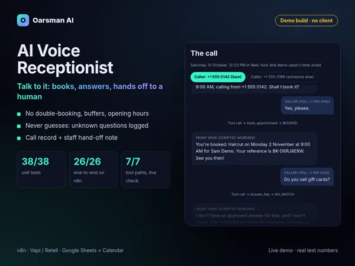
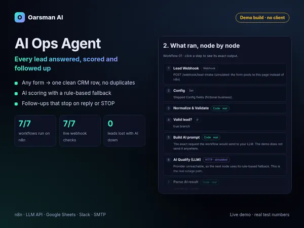
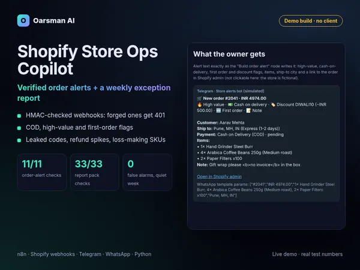
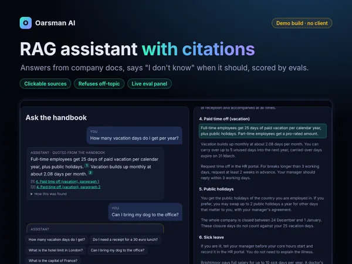
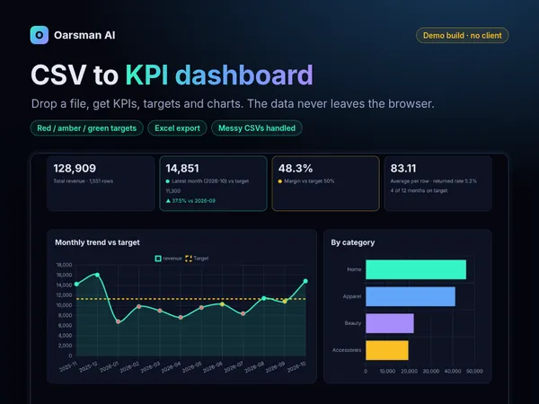
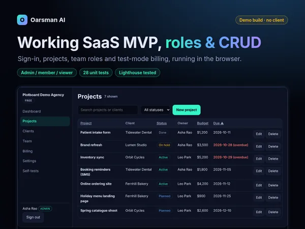
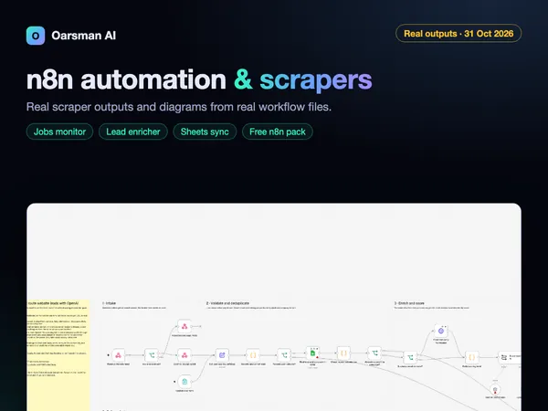

Try Oarsman AI's ready-made agents before you get them
Each demo runs the real logic of an Oarsman AI agent or tool in your browser, on a fictional business. Nothing is sent anywhere. Every page says plainly what is real, what is sample data and what is simulated, and six of the seven have a case study with their test results.
The demos
Pick one and click around. The product each demo comes from is linked at the bottom of its card.
-

AI voice receptionist
Talk or type as a caller at a fictional salon. Booking, FAQ answers, cancelling and hand-off to staff run on the real booking engine from the Front Desk kit.
38/38 unit tests · 26/26 end-to-end tests on n8n
Front Desk voice agent kit at oarsmanai.com -

AI Ops Agent: lead intake and follow-up
Send a lead to a fictional agency and watch the kit's real n8n Code nodes clean it, score it A/B/C/spam (with the AI-outage fallback), save it to a CRM sheet and follow up until it replies.
7/7 workflows run on n8n · 7/7 live webhook checks
Lead Autopilot at oarsmanai.com -

Shopify Store Ops Copilot
Fire signed Shopify webhooks at the order-alert workflow: forged ones get 401 and retries are de-duplicated. Then read the weekly exception report for a sample coffee store.
11/11 order-alert checks · 33/33 report checks
Store Ops Copilot at oarsmanai.com -

RAG assistant with citations
Ask a fictional company handbook anything. Answers quote their source with clickable citations, uncovered questions get "I don't know", and an eval panel shows the live pass rate.
33/34 eval questions pass, the one miss left visible
Website Support Agent at oarsmanai.com -

CSV to KPI dashboard
Load the sample store data or your own CSV and get KPIs, monthly trends, targets with red/amber/green flags and an Excel export. Your file is read in your browser and never uploaded.
14/14 unit tests · 45/45 browser checks
CSV → KPI Dashboard at oarsmanai.com -

SaaS MVP starter (Plotboard)
A working multi-user app for a fictional agency. Sign in as admin, member or viewer, manage projects and clients, hit the seat limit and upgrade in test mode. Saved in your browser.
28/28 unit tests · 60/60 browser checks
SaaS MVP Starter at oarsmanai.com -

n8n automation and scrapers
Real outputs from Oarsman AI's Apify actors (jobs monitor, website contacts, Google Sheets sync), run on public data on 31 Oct 2026, plus diagrams drawn from the real n8n workflow files.
Snapshot of real runs, linked to their sources
Free n8n Workflow Pack at oarsmanai.com
How to read these demos
Real logic, made-up businesses
The salon, agency, store, company and people in the demos are fictional. The logic is the product's own code, running in your browser. No demo calls an AI model or a paid API, and none needs a key.
Labelled honestly
Every demo page tags what is RealSample or Simulated. Compare all demos side by side.
Tests, not client results
The numbers on these pages come from Oarsman AI's own test reports. There are no client results or reviews to show yet, so you won't find any here. AI tools helped write the code and the copy.
Get the ready-made versions
The agents and tools behind these demos are listed at oarsmanai.com, with what each one includes, how it was tested and whether it is available yet.